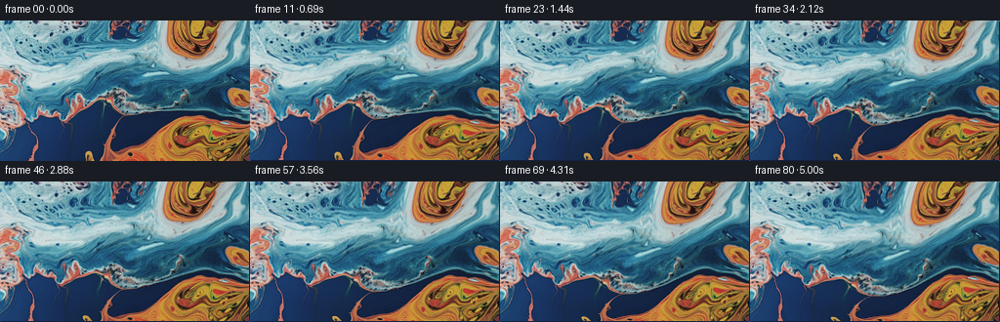
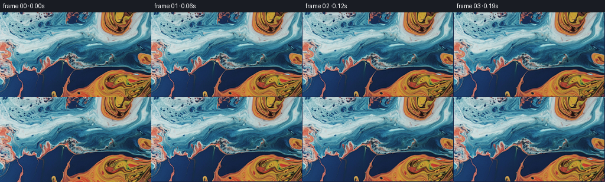
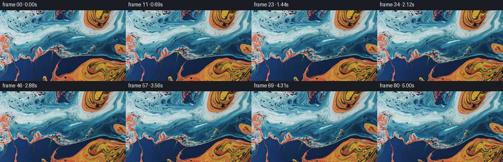
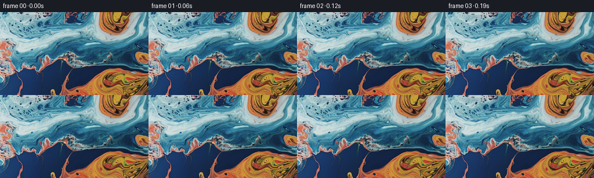

← 本轮 smoke 总览traex/GPT-5.6-Sol · 0000_s0
text · 256×144 · 16.0 FPS · 81 帧 · 状态 complete · 输出 tokens 7114
原始任务a close up of a blue and orange liquid
当前保存结果
已保存候选与代码修改
这里按时间展示外部捕获的候选，每份均可单独播放。保存新版本不等于完成视觉检查；下方工具证据记录实际看过的图。
候选 01 · 2026-11-08T22:41:34.425819+00:00 · 点开播放与检查图
inspection.png

transition_check.png

代码变化
--- 上一保存版本
+++ 本次保存版本
@@ -0,0 +1,142 @@
+"""Generate a close macro view of gently circulating blue and orange liquid.
+
+The source photograph supplies all appearance. A deterministic, smooth,
+divergence-light flow map advects its fine detail, while a very restrained
+moving refraction field gives the surface the small changes in sheen expected
+from viscous liquid.
+"""
+from pathlib import Path
+import json
+
+import cv2
+import numpy as np
+from PIL import Image
+
+from artifact_io import save
+
+
+ROOT = Path(__file__).resolve().parent
+
+
+def reflect_coordinates(a, maximum):
+ """Mirror arbitrary floating coordinates into [0, maximum]."""
+ period = 2.0 * maximum
+ a = np.mod(a, period)
+ return np.where(a <= maximum, a, period - a).astype(np.float32)
+
+
+def make_video(first, count):
+ h, w = first.shape[:2]
+ yy, xx = np.mgrid[0:h, 0:w].astype(np.float32)
+
+ # A static velocity component following broad colour contours retains the
+ # photograph's liquid structure instead of sliding it like a flat card.
+ f = first.astype(np.float32) / 255.0
+ chroma = cv2.GaussianBlur(f[..., 0] - f[..., 2], (0, 0), 9.0)
+ gy, gx = np.gradient(chroma)
+ mag = np.sqrt(gx * gx + gy * gy)
+ contour_u = -gy / (0.010 + mag)
+ contour_v = gx / (0.010 + mag)
+ contour_u = cv2.GaussianBlur(contour_u, (0, 0), 5.0).astype(np.float32)
+ contour_v = cv2.GaussianBlur(contour_v, (0, 0), 5.0).astype(np.float32)
+
+ def velocity(px, py, tick):
+ """Smooth multiscale circulation, measured in pixels per frame."""
+ xn = px / (w - 1.0)
+ yn = py / (h - 1.0)
+ # Fade normal motion toward the image boundary, avoiding edge pumping.
+ edge = (np.sin(np.pi * xn) * np.sin(np.pi * yn)) ** 0.55
+
+ u = np.zeros_like(px, dtype=np.float32)
+ v = np.zeros_like(py, dtype=np.float32)
+
+ # Three very broad eddies. Their centres breathe slowly, making the
+ # flow organic without introducing temporal noise.
+ vortices = (
+ (0.26 + 0.018*np.sin(tick*0.021), 0.60 + 0.018*np.cos(tick*0.017), 0.0048, 0.40),
+ (0.72 + 0.014*np.cos(tick*0.018), 0.67 + 0.018*np.sin(tick*0.020), -0.0040, 0.43),
+ (0.58 + 0.015*np.sin(tick*0.015), 0.22 + 0.012*np.cos(tick*0.023), 0.0031, 0.31),
+ )
+ for cxn, cyn, strength, radius_n in vortices:
+ dx = px - cxn * (w - 1)
+ dy = py - cyn * (h - 1)
+ radius = radius_n * min(w, h)
+ falloff = np.exp(-(dx*dx + dy*dy) / (2.0*radius*radius)).astype(np.float32)
+ pulse = 1.0 + 0.14*np.sin(tick*0.029 + cxn*8.0)
+ u += (-strength * dy * falloff * pulse).astype(np.float32)
+ v += ( strength * dx * falloff * pulse).astype(np.float32)
+
+ # Long, slow folds through the viscous surface. These terms are
+ # paired derivatives of a stream function and are nearly
+ # incompressible.
+ p = tick * 0.032
+ u += (0.105 * np.sin(2*np.pi*xn + 0.55*np.sin(p)) *
+ np.cos(np.pi*yn + p*0.34)).astype(np.float32)
+ v += (-0.075 * np.cos(2*np.pi*xn + 0.55*np.sin(p)) *
+ np.sin(np.pi*yn + p*0.34)).astype(np.float32)
+
+ # Sample the contour-following part at the material coordinate.
+ cu = cv2.remap(contour_u, px, py, cv2.INTER_LINEAR,
+ borderMode=cv2.BORDER_REFLECT_101)
+ cv = cv2.remap(contour_v, px, py, cv2.INTER_LINEAR,
+ borderMode=cv2.BORDER_REFLECT_101)
+ u += 0.115 * cu
+ v += 0.115 * cv
+ return u * edge, v * edge
+
+ # Material coordinates for an inverse semi-Lagrangian flow map. Sampling
+ # the original on every frame avoids cumulative resampling blur.
+ map_x = xx.copy()
+ map_y = yy.copy()
+ frames = [first.copy()] # contract: byte-identical frame zero
+
+ for i in range(1, count):
+ # Midpoint integration gives smooth curved trajectories at little cost.
+ u1, v1 = velocity(map_x, map_y, i - 1.0)
+ hx = reflect_coordinates(map_x - 0.5*u1, w - 1)
+ hy = reflect_coordinates(map_y - 0.5*v1, h - 1)
+ u2, v2 = velocity(hx, hy, i - 0.5)
+ map_x = reflect_coordinates(map_x - u2, w - 1)
+ map_y = reflect_coordinates(map_y - v2, h - 1)
+
+ # Fine refractive ripples ride on the broad fluid motion. Their small
+ # amplitude keeps the result photographic rather than wavy/synthetic.
+ t = i / 16.0
+ ripple_x = (0.24*np.sin(0.043*yy + 0.025*xx + 1.05*t) +
+ 0.13*np.sin(0.018*yy - 0.052*xx - 0.63*t))
+ ripple_y = (0.20*np.sin(0.048*xx - 0.021*yy + 0.88*t) +
+ 0.11*np.cos(0.031*xx + 0.058*yy - 0.57*t))
+ # Ramp in over the first few frames for an especially clean start.
+ ramp = min(1.0, i / 8.0)
+ sx = reflect_coordinates(map_x + ramp*ripple_x.astype(np.float32), w - 1)
+ sy = reflect_coordinates(map_y + ramp*ripple_y.astype(np.float32), h - 1)
+ warped = cv2.remap(first, sx, sy, cv2.INTER_CUBIC,
+ borderMode=cv2.BORDER_REFLECT_101)
+
+ # Subtle moving caustic illumination, restricted mainly to naturally
+ # bright areas. It is deliberately only a couple of code values.
+ wf = warped.astype(np.float32)
+ lum = wf[..., 0]*0.2126 + wf[..., 1]*0.7152 + wf[..., 2]*0.0722
+ bright_weight = np.clip((lum - 80.0) / 130.0, 0.0, 1.0)
+ sheen = (np.sin(0.026*xx + 0.041*yy + 0.72*t) +
+ 0.55*np.sin(-0.049*xx + 0.019*yy - 0.46*t))
+ # Relative to the t=0 pattern so there is no arbitrary static repaint.
+ sheen0 = (np.sin(0.026*xx + 0.041*yy) +
+ 0.55*np.sin(-0.049*xx + 0.019*yy))
+ delta = 1.25 * bright_weight * (sheen - sheen0)
+ wf += delta[..., None] * np.array([1.00, 1.05, 1.08], np.float32)
+ frames.append(np.clip(np.rint(wf), 0, 255).astype(np.uint8))
+
+ return np.stack(frames, axis=0)
+
+
+def main():
+ spec = json.loads((ROOT / "task_spec.json").read_text())
+ first = np.asarray(Image.open(ROOT / "first_frame.png").convert("RGB"), dtype=np.uint8)
+ assert first.shape == (spec["height"], spec["width"], 3)
+ frames = make_video(first, int(spec["frames"]))
+ save(frames, ROOT)
+
+
+if __name__ == "__main__":
+ main()
候选 02 · 2026-11-08T22:41:45.607331+00:00 · 点开播放与检查图
inspection.png

transition_check.png

代码变化
--- 上一保存版本
+++ 本次保存版本
@@ -45,7 +45,7 @@
xn = px / (w - 1.0)
yn = py / (h - 1.0)
# Fade normal motion toward the image boundary, avoiding edge pumping.
- edge = (np.sin(np.pi * xn) * np.sin(np.pi * yn)) ** 0.55
+ edge = np.maximum(0.0, np.sin(np.pi * xn) * np.sin(np.pi * yn)) ** 0.55
u = np.zeros_like(px, dtype=np.float32)
v = np.zeros_like(py, dtype=np.float32)
可观测工具行为
命令 1 · 2026-11-08T22:40:14.775809+00:00/bin/bash -lc "cat GENERATION_RULES.md && printf '\\n---PROMPT---\\n' && cat prompt.txt"
exit 0 命令 2 · 2026-11-08T22:40:14.989844+00:00/bin/bash -lc "find . -maxdepth 2 -type f -printf '%p %s bytes\\n' | sort && printf '\\nTools:\\n' && command -v ffmpeg || true && command -v python3 || true"
exit 0 命令 3 · 2026-11-08T22:40:24.545972+00:00/bin/bash -lc "cat task_spec.json && sed -n '1,240p' artifact_io.py"
exit 0 命令 4 · 2026-11-08T22:40:25.039269+00:00/bin/bash -lc "python3 - <<'PY'
from PIL import Image
import numpy as np
im=np.array(Image.open('first_frame.png').convert('RGB'))
print(im.shape, im.dtype, im.min(), im.max())
print('mean/std channels',im.mean((0,1)),im.std((0,1)))
# quantiles colors/chroma
for c,n in enumerate('RGB'):
print(n, np.percentile(im[...,c],[0,1,5,10,25,50,75,90,95,99,100]))
# 8x4 block average RGB and dominant classification orange vs blue by R-B
for by in range(4):
row=[]
for bx in range(8):
a=im[by*36:(by+1)*36,bx*32:(bx+1)*32]
row.append(tuple(np.round(a.mean((0,1))).astype(int)))
print(row)
print('R-B block')
for by in range(8):
print(' '.join(f'{im[by*18:(by+1)*18,bx*16:(bx+1)*16,0].mean()-im[by*18:(by+1)*18,bx*16:(bx+1)*16,2].mean():6.0f}' for bx in range(16)))
# edge stats and color category proportions
rb=im[...,0].astype(float)-im[...,2]
print('orange rb>30',np.mean(rb>30),'blue rb<-30',np.mean(rb<-30),'neutral',np.mean(abs(rb)<=30))
# brightest pixels coords
lum=np.dot(im,[.2126,.7152,.0722])
for q in [50,75,90,95,99]: print('lum',q,np.percentile(lum,q))
ys,xs=np.unravel_index(np.argsort(lum.ravel())[-20:],lum.shape)
print('bright xy',list(zip(xs.tolist(),ys.tolist())))
PY"exit 0 命令 5 · 2026-11-08T22:40:36.196064+00:00/bin/bash -lc "python3 - <<'PY'
import importlib.util
for x in ['scipy','cv2','skimage','imageio']:
print(x, importlib.util.find_spec(x))
from PIL import Image
import numpy as np
im=np.array(Image.open('first_frame.png').convert('RGB'))
# print coarse category: O if R-B > 35, b if B-R > 55, B >30, neutral ., brightness punctuation
for gy in range(24):
s=''
for gx in range(64):
a=im[gy*6:(gy+1)*6,gx*4:(gx+1)*4].mean((0,1)); r,g,b=a
d=r-b
if d>60: c='O'
elif d>25: c='o'
elif d<-65: c='B'
elif d<-30: c='b'
else: c='.'
if sum(a)/3<55: c=c.lower() if c"'!='"'.' else ' '
s+=c
print(s)
PY"exit 0 命令 6 · 2026-11-08T22:41:27.718437+00:00/bin/bash -lc "cat > generate.py <<'PY'
\"\"\"Generate a close macro view of gently circulating blue and orange liquid.
The source photograph supplies all appearance. A deterministic, smooth,
divergence-light flow map advects its fine detail, while a very restrained
moving refraction field gives the surface the small changes in sheen expected
from viscous liquid.
\"\"\"
from pathlib import Path
import json
import cv2
import numpy as np
from PIL import Image
from artifact_io import save
ROOT = Path(__file__).resolve().parent
def reflect_coordinates(a, maximum):
\"\"\"Mirror arbitrary floating coordinates into [0, maximum].\"\"\"
period = 2.0 * maximum
a = np.mod(a, period)
return np.where(a <= maximum, a, period - a).astype(np.float32)
def make_video(first, count):
h, w = first.shape[:2]
yy, xx = np.mgrid[0:h, 0:w].astype(np.float32)
# A static velocity component following broad colour contours retains the
# photograph's liquid structure instead of sliding it like a flat card.
f = first.astype(np.float32) / 255.0
chroma = cv2.GaussianBlur(f[..., 0] - f[..., 2], (0, 0), 9.0)
gy, gx = np.gradient(chroma)
mag = np.sqrt(gx * gx + gy * gy)
contour_u = -gy / (0.010 + mag)
contour_v = gx / (0.010 + mag)
contour_u = cv2.GaussianBlur(contour_u, (0, 0), 5.0).astype(np.float32)
contour_v = cv2.GaussianBlur(contour_v, (0, 0), 5.0).astype(np.float32)
def velocity(px, py, tick):
\"\"\"Smooth multiscale circulation, measured in pixels per frame.\"\"\"
xn = px / (w - 1.0)
yn = py / (h - 1.0)
# Fade normal motion toward the image boundary, avoiding edge pumping.
edge = (np.sin(np.pi * xn) * np.sin(np.pi * yn)) ** 0.55
u = np.zeros_like(px, dtype=np.float32)
v = np.zeros_like(py, dtype=np.float32)
# Three very broad eddies. Their centres breathe slowly, making the
# flow organic without introducing temporal noise.
vortices = (
(0.26 + 0.018*np.sin(tick*0.021), 0.60 + 0.018*np.cos(tick*0.017), 0.0048, 0.40),
(0.72 + 0.014*np.cos(tick*0.018), 0.67 + 0.018*np.sin(tick*0.020), -0.0040, 0.43),
(0.58 + 0.015*np.sin(tick*0.015), 0.22 + 0.012*np.cos(tick*0.023), 0.0031, 0.31),
)
for cxn, cyn, strength, radius_n in vortices:
dx = px - cxn * (w - 1)
dy = py - cyn * (h - 1)
radius = radius_n * min(w, h)
falloff = np.exp(-(dx*dx + dy*dy) / (2.0*radius*radius)).astype(np.float32)
pulse = 1.0 + 0.14*np.sin(tick*0.029 + cxn*8.0)
u += (-strength * dy * falloff * pulse).astype(np.float32)
v += ( strength * dx * falloff * pulse).astype(np.float32)
# Long, slow folds through the viscous surface. These terms are
# paired derivatives of a stream function and are nearly
# incompressible.
p = tick * 0.032
u += (0.105 * np.sin(2*np.pi*xn + 0.55*np.sin(p)) *
np.cos(np.pi*yn + p*0.34)).astype(np.float32)
v += (-0.075 * np.cos(2*np.pi*xn + 0.55*np.sin(p)) *
np.sin(np.pi*yn + p*0.34)).astype(np.float32)
# Sample the contour-following part at the material coordinate.
cu = cv2.remap(contour_u, px, py, cv2.INTER_LINEAR,
borderMode=cv2.BORDER_REFLECT_101)
cv = cv2.remap(contour_v, px, py, cv2.INTER_LINEAR,
borderMode=cv2.BORDER_REFLECT_101)
u += 0.115 * cu
v += 0.115 * cv
return u * edge, v * edge
# Material coordinates for an inverse semi-Lagrangian flow map. Sampling
# the original on every frame avoids cumulative resampling blur.
map_x = xx.copy()
map_y = yy.copy()
frames = [first.copy()] # contract: byte-identical frame zero
for i in range(1, count):
# Midpoint integration gives smooth curved trajectories at little cost.
u1, v1 = velocity(map_x, map_y, i - 1.0)
hx = reflect_coordinates(map_x - 0.5*u1, w - 1)
hy = reflect_coordinates(map_y - 0.5*v1, h - 1)
u2, v2 = velocity(hx, hy, i - 0.5)
map_x = reflect_coordinates(map_x - u2, w - 1)
map_y = reflect_coordinates(map_y - v2, h - 1)
# Fine refractive ripples ride on the broad fluid motion. Their small
# amplitude keeps the result photographic rather than wavy/synthetic.
t = i / 16.0
ripple_x = (0.24*np.sin(0.043*yy + 0.025*xx + 1.05*t) +
0.13*np.sin(0.018*yy - 0.052*xx - 0.63*t))
ripple_y = (0.20*np.sin(0.048*xx - 0.021*yy + 0.88*t) +
0.11*np.cos(0.031*xx + 0.058*yy - 0.57*t))
# Ramp in over the first few frames for an especially clean start.
ramp = min(1.0, i / 8.0)
sx = reflect_coordinates(map_x + ramp*ripple_x.astype(np.float32), w - 1)
sy = reflect_coordinates(map_y + ramp*ripple_y.astype(np.float32), h - 1)
warped = cv2.remap(first, sx, sy, cv2.INTER_CUBIC,
borderMode=cv2.BORDER_REFLECT_101)
# Subtle moving caustic illumination, restricted mainly to naturally
# bright areas. It is deliberately only a couple of code values.
wf = warped.astype(np.float32)
lum = wf[..., 0]*0.2126 + wf[..., 1]*0.7152 + wf[..., 2]*0.0722
bright_weight = np.clip((lum - 80.0) / 130.0, 0.0, 1.0)
sheen = (np.sin(0.026*xx + 0.041*yy + 0.72*t) +
0.55*np.sin(-0.049*xx + 0.019*yy - 0.46*t))
# Relative to the t=0 pattern so there is no arbitrary static repaint.
sheen0 = (np.sin(0.026*xx + 0.041*yy) +
0.55*np.sin(-0.049*xx + 0.019*yy))
delta = 1.25 * bright_weight * (sheen - sheen0)
wf += delta[..., None] * np.array([1.00, 1.05, 1.08], np.float32)
frames.append(np.clip(np.rint(wf), 0, 255).astype(np.uint8))
return np.stack(frames, axis=0)
def main():
spec = json.loads((ROOT / \"task_spec.json\").read_text())
first = np.asarray(Image.open(ROOT / \"first_frame.png\").convert(\"RGB\"), dtype=np.uint8)
assert first.shape == (spec[\"height\"], spec[\"width\"], 3)
frames = make_video(first, int(spec[\"frames\"]))
save(frames, ROOT)
if __name__ == \"__main__\":
main()
PY
python3 generate.py
python3 - <<'PY'
from PIL import Image
import numpy as np
z=np.load('pixels.npz')['pixels']
print('packed tensor',z.shape,z.dtype)
ims=np.stack([np.array(Image.open(f'frames/{i:02d}.png')) for i in range(81)])
first=np.array(Image.open('first_frame.png').convert('RGB'))
print('frames',ims.shape,ims.dtype,'first exact',np.array_equal(first,ims[0]))
for i in [1,2,5,10,20,40,60,80]:
d=np.abs(ims[i].astype(np.int16)-ims[0].astype(np.int16))
dp=np.abs(ims[i].astype(np.int16)-ims[i-1].astype(np.int16))
print(i,'vs0 mean/max/p95',round(d.mean(),3),d.max(),np.percentile(d,95),'step',round(dp.mean(),3),np.percentile(dp,95))
PY"exit 0 命令 7 · 2026-11-08T22:41:40.965507+00:00/bin/bash -lc "python3 - <<'PY'
from PIL import Image
import numpy as np
A=np.array(Image.open('frames/00.png')).astype(int); B=np.array(Image.open('frames/01.png')).astype(int)
d=np.max(abs(B-A),2)
ys,xs=np.where(d>50)
print(len(xs), list(zip(xs[:100],ys[:100])))
print('ranges', (xs.min(),xs.max(),ys.min(),ys.max()))
# diff by border and regions
for b in [1,2,3,5,10,20]:
m=np.zeros(d.shape,bool);m[:b]=m[-b:]=True;m[:,:b]=True;m[:,-b:]=True
print(b,d[m].mean(),np.percentile(d[m],[50,90,95,99,100]),d[~m].mean(),np.max(d[~m]))
PY
python3 - <<'PY'
p='generate.py'
s=open(p).read();s=s.replace('edge = (np.sin(np.pi * xn) * np.sin(np.pi * yn)) ** 0.55','edge = np.maximum(0.0, np.sin(np.pi * xn) * np.sin(np.pi * yn)) ** 0.55')
open(p,'w').write(s)
PY
python3 generate.py"exit 0 命令 8 · 2026-11-08T22:41:49.166987+00:00/bin/bash -lc "python3 - <<'PY'
from PIL import Image
import numpy as np, hashlib, os
ims=np.stack([np.array(Image.open(f'frames/{i:02d}.png')) for i in range(81)])
f=np.array(Image.open('first_frame.png').convert('RGB'))
print('exact',np.array_equal(ims[0],f),ims.shape,ims.dtype)
for i in [1,2,5,10,20,40,60,80]:
d=np.abs(ims[i].astype('i2')-ims[0].astype('i2')); q=np.abs(ims[i].astype('i2')-ims[i-1].astype('i2'))
print(i,'vs0',round(d.mean(),2),np.percentile(d,[50,90,95,99,100]),'step',round(q.mean(),2),np.percentile(q,[90,95,99,100]))
# exact border major errors now
D=np.max(abs(ims[1].astype(int)-f.astype(int)),2)
print('step1 >50',np.sum(D>50),'coords',np.argwhere(D>50)[:10].tolist())
print('files',[(x,os.path.getsize(x)) for x in ['pixels.npz','inspection.png','transition_check.png','index.html','generate.py']])
PY"exit 0 保存候选 2 份；完成命令 8 次；可验证图片返回 0 张。原始 API 响应与完整日志保留在本地。